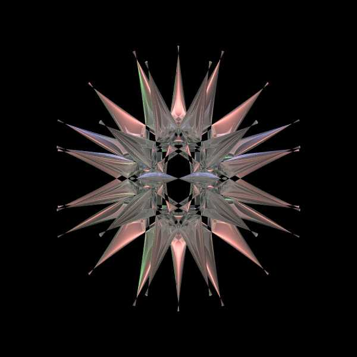
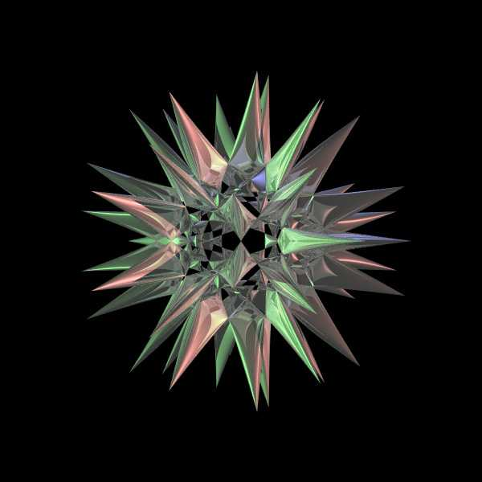
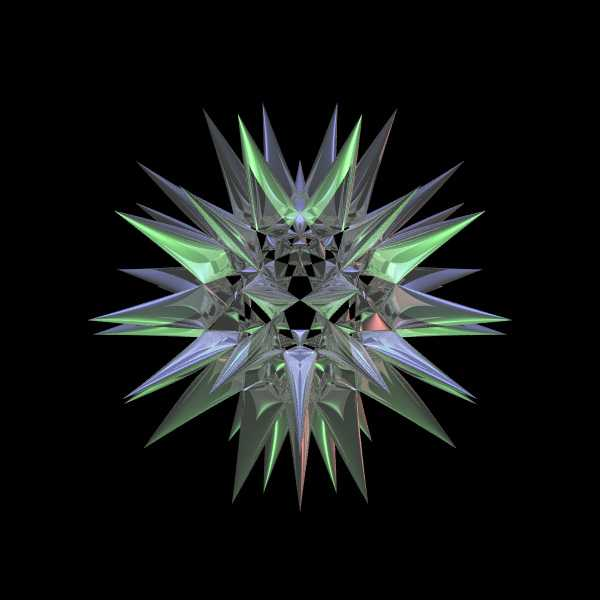
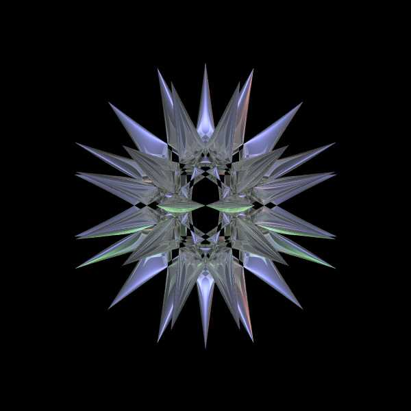

Barth Decic
Graphics by Paul Bourke
August 2005
8 (x2 - p4 y2) (y2 - p4 z2)
(z2 - p4 x2)
[x4 + y4 + z4 - 2 x2 y2 -
2 x2 z2 - 2 y2 z2] +
a (3 + 5 p) [(x2 + y2 + z2 - a)]2
[(x2 + y2 + z2 - (2-p) a)]2
= 0
Where a = 1 and p = (sqrt(5) + 1) / 2 ... the golden section.




Povray Code
#declare a = 1; // Change as a sqrt(value)
#declare p = (sqrt(5)+1)/2; // Golden section phi
#declare p4 = 3*p+2; // p4 = pow(phi,4);
#declare r = 2; // r = 1.9 for perfect cutoff // (Doctor John)
isosurface {
function {
8 * (x*x - p4*y*y) * (y*y - p4*z*z) * (z*z - p4*x*x) *
(x*x*x*x + y*y*y*y + z*z*z*z - 2*x*x*y*y - 2*x*x*z*z - 2*y*y*z*z) +
a * (3 + 5*p) * pow((x*x + y*y + z*z - a),2) *
pow((x*x + y*y + z*z - (2-p)*a),2)
}
contained_by {
sphere { <0,0,0>, r }
}
threshold 0
max_gradient 25060 // (Doctor John)
open
texture { T_Silver_5C }
}
|